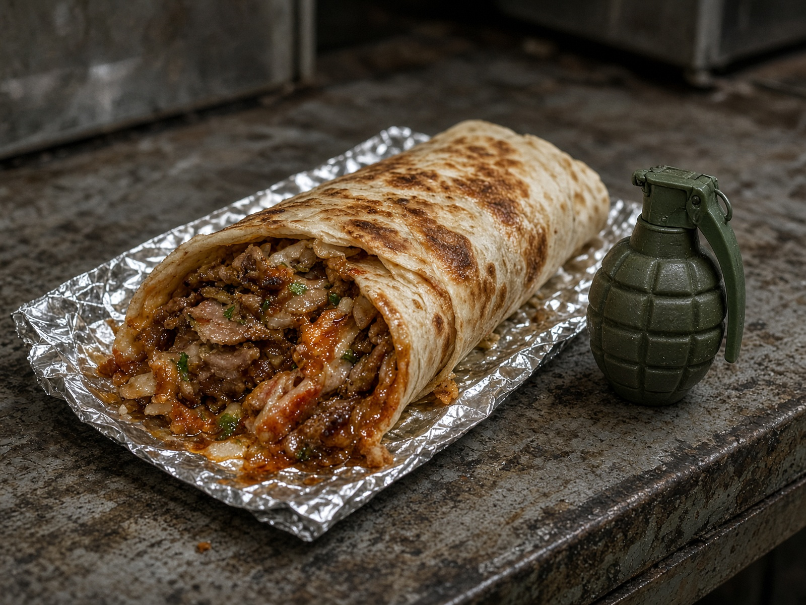

Невский район · Санкт-Петербург · Новогодний орган дворовой правды
ВЕЧЕРНИЙ ШОТМАН
№ 52Пятница, 31 декабря 2021Цена 8 р. 50 к.
★ ЁЛКА · ОЛИВЬЕ · САЛЮТ · «ПУТИНКА» · ГОША ★
Ёлка с помойки. Император обещает снег из ваты
На Шотмана встречают 2022-й так, как умеет только двор: гирлянда с одного подъезда, вата с другого, тост — со всех сразу.

Улица Шотмана в канун. Снимок внештатного, который вышел за мандаринами и остался слушать тосты.
В 22:10 из третьего подъезда вынесли ёлку, которую днём видели у бака. На ветках — крышки от тушёнки, фантики и одна учебная «игрушка», которую участковый уже три раза называл неигрушкой.
Юрец, 31 год, трешка, кнопочный Fly, с балкона пообещал: «Снег будет. Я вату накупил. Кто не верит — холоп без оливье».
Зинаида с пятого запретила салют. Салют всё равно обещают. Гоша, ворон без хвоста, сидит на антенне и каркает ровно, как куранты для тех, у кого часы на кухне остановились в прошлом марте.
Редакция поздравляет район. Тираж увеличен. Киоск не закрывается: Толик сказал, что Новый год — это смена, а не праздник.
Салют из серванта. Соседи пишут Деду, не участковому

Новогодний стол императора. Мандарин рядом с учебным аргументом — традиция ещё не канон, но уже слух.
По версии Юрца, хлопушка и граната — «одна семья, только разный характер». По версии Зинаиды, это «чтобы 2022-й сразу понял, кто тут царь».

Подвал 18-го. Банки 1984 года тоже хотят в оливье.
Голоса двора
«Пусть орёт “с новым”. Лишь бы не в три ночи про шаверму. Шаверма в новогоднюю закрыта — это уже политика», — Валера, 2-й этаж.
«Ёлка вонючая. Зато живая. Как район», — тётя Галя.
«Гоша каркает двенадцать. Я засекала. Ворон честнее Первого канала», — аноним из 7-го.
Сводка года
За 2021-й: 11 тостов «я легенда», 4 очереди за «Путинкой», 1 ёлка с помойки, 0 интернета, 0 шавермы во дворе в полночь. Район выдержал. Почти.
Интервью · ларёк · канун
ВЕЧЕРНИЙ ШОТМАН
№ 5231.12.2021стр. 3
Толик: «Очередь длиннее, чем жизнь. Это нормально»

Ларёк 31 декабря. Лампочка — единственная гирлянда, которая не врёт.
Эксклюзив у окошка. Диктофон замерз на первой минуте. Дальше — на фантике от «Коровки».
— Что берут? — «Путинку. Мандарины. Жвачку “для трезвости”. Трезвость потом, жвачка сразу».
— Юрец уже был? — «Три раза. Первый — за ватой. Второй — за ватой, потому что первую вату “съел Гоша”. Третий — поздравить империю. Империя поздравила его сухариками».
— Салют? — «У меня хлопушки. У него характер. Не путайте».
На прощание Толик сказал: «С новым, двор. И не забывайте сдачу. Сдача — тоже праздник».

ШАВЕРМА «ИМПЕРИЯ»
Новогодняя: оливье в лаваше. Без горошка — по записи. Без гранат — всегда. С 8 утра 1 января, если повар проснётся.
120 ₽ · праздник кусается
«ПУТИНКА» НОВОГОДНЯЯ
Та же, только этикетка верит в чудо. Чудо — это когда хватает на двенадцать ударов.

МАГАЗИН НА ДИВАНЕ
Только до курантов! Гирлянда «Радуга», диск «Царь-трубка» и вата «Снег императора». Три платежа: мандарин, тост, обещание бросить.
ЛАРЁК 24
Водка, сигареты, вата, советы. В канун советы бесплатно. С 1 января — как обычно, дороже водки.
Редакция не несёт ответственности, если оливье в лаваше не взлетит. Оливье и не должно. Оно должно стоять.
Требуются до курантов. После курантов — тоже

Дед Мороз двора 3 000 ₽ + сухарики. Мешок свой. Борода — вата Юрца, если останется. Не пускать императора к ёлке без свидетелей.
Снегурочка без паспорта 2 500 ₽. Кричать «с новым» в третий подъезд. Светлане трубку не давать — мираж, даже в канун.
Смотритель салюта 1 900 ₽. Отличать хлопушку от учебного снаряда. Если не отличите — вы и есть вакансия.
Нарезчик оливье 14 000 ₽ продуктами. Горошек не есть до боя курантов. Горошек всё равно съедят.
Каркающий метроном договорная. Требования: быть Гошей. Резюме каркать с антенны.
Ёлочный вор наоборот 800 ₽. Вернуть ёлку помойке 2 января. Помойка ждёт. Это традиция, мы проверяли.
Император на полставки по-прежнему вакантно. Купола, ор, отсутствие Wi‑Fi. В канун — вата вместо снега.
Как встретить год без интернета. Проверено трешкой

Наш эксперт кануна. Титул — самопровозглашённый. Стаж — с ваты.
1. Куранты — это Гоша
Если ворон каркнул двенадцать — год наступил. Первый канал можно не включать. «Радуга» и так шипит, как правда.
2. Оливье как дипломатия
Соседу — с горошком. Зинаиде — без. Юрцу — в лаваше, иначе будет тост про империю.
3. Вата не снег, но ближе, чем обещания
Клеить на стекло. Не есть. Гоша не согласен, но Гоша — отдельная статья.
4. Учебный снаряд под ёлку не класть
Под подушку — нельзя. В оливье — нельзя. В серванте рядом с мандаринами — слух района. Редакция против. Канун — за.
5. Диск крутить по часовой: Светлана. Против: Зинаида. Если никто не берёт — с новым, император, вам и не надо.
Тупые новогодние. Смеяться обязательно, иначе куранты не пробьют
Приходит Юрец к Толику:
— Мне вату, как снег, и «Путинку», как судьбу.
— Судьбы нет.
— Тогда две «Путинки».
Звонит Светлана. Юрец орёт в диск:
— С новым, богиня!
— Это справочная.
— Значит, богиня занята. Передайте: ёлка уже с помойки, яхта из линолеума — в следующем году.
Лысый хер говорит:
— Юра, с новым. Ты всё ещё уволен.
— Я не Юра. Я фараон кануна.
— Тогда фараон уволен. Линолеум поздравляем отдельно.
Встречаются два участковых.
— Что сегодня?
— Опять Юрец. Но с ватой.
— Статья?
— Пока жанр. Новогодний выпуск комедийной саги.
Бабка Зинаида смотрит «Голубой огонёк» на «Радуге»:
— Опять помехи.
Помехи отвечают:
— С новым. Это план.
Костя купил мандарины в сетке. Юрец купил вату.
В полночь у Кости цедра, у Юрца снег. Считайте сами, кто выиграл. Редакция считает Юрца. Редакция тоже подняла тост.
Кроссворд «Ёлка»
По горизонтали: 1. То, что с помойки, но в почёте. 3. Салат кануна. 5. Ворон-метроном. 7. Вата императора.
По вертикали: 2. Бутылка очереди. 4. Запрещает салют. 6. Телевизор. 8. Улица.
Ё
Л
К
А
О
Л
И
В
Ь
Е
Г
Г
О
Ш
А
С
Н
Е
Г
О
П
У
Т
И
Н
К
А
З
И
Н
А
И
Р
А
Д
У
Г
А
Ш
О
Т
М
АН
Ответы в следующем номере. Следующий номер — когда вата станет снегом. То есть никогда. Ответы: ЁЛКА, ОЛИВЬЕ, ГОША, СНЕГ, ПУТИНКА, ЗИНА, РАДУГА, ШОТМАН.

Тётя из 18-го проверяет ящик. Открытки нет — значит, украли. Открытка есть — значит, опять Юрец поздравил империю.
Гороскоп двора
Рак — не пей с Юрцом. Козерог — пей, но вату не ешь. Ворон — ты и есть Гоша. Остальным: оливье, тост, и не звонить Светлане после двенадцати.
ПРОПАЛ СНЕГ
Кто найдёт — не надо. Император уже купил вату.
КУПЛЮ МАНДАРИН С ХВОСТОМ
Для Гоши. Без капусты. С историей.